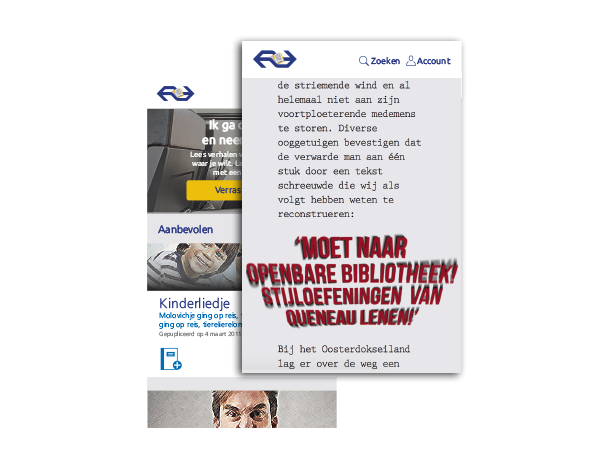

Terug
bekijk nsverhalen website
In opdracht van de NS heb ik een NS verhalen website ontworpen. De NS verhalen website biedt de bezoeker 99 verschillende verhalen die het reizen leuker maken. Voor dit individuele project moest er een homepage, drie NS verhalen (vormgegeven), twee microinteracties en een inlogpagina worden opgeleverd.
De vormgeving van de NS verhalen website is gebaseerd op die van ns.nl. De drie NS verhalen hebben daarentegen hun eigen vormgeving. Op grond van het gevoel dat ik kreeg na het lezen van de verhalen, heb ik de verhalen vormgegeven.

Tijdens het reizen is het belangrijk dat de nsverhalen website inspeelt op de context van de gebruiker. De microinteracties die ik heb ontworpen spelen in op momenten dat de gebruiker snel op zijn mobiel kijkt tijdens een overstap.